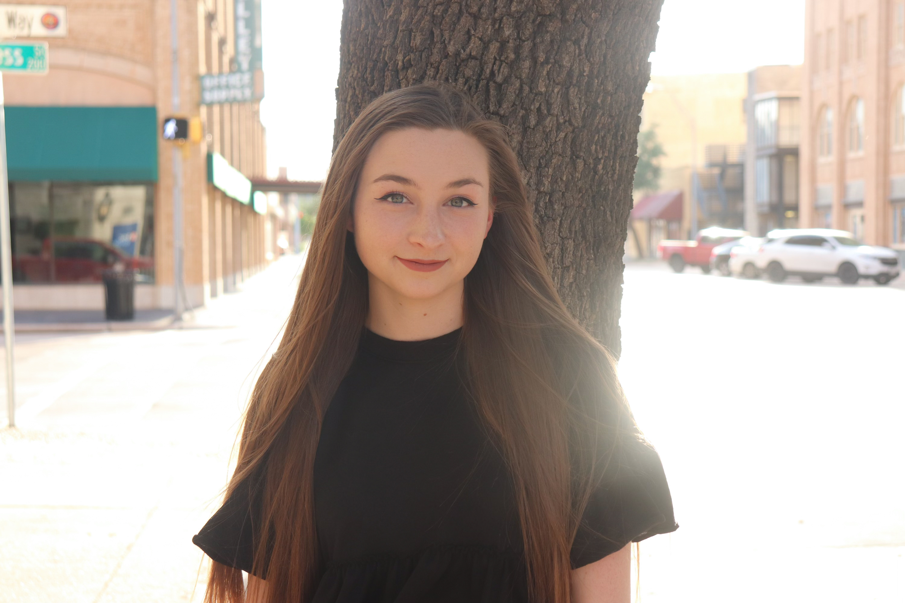

Jaylynn Ward graduated from Abilene Christian University in
May. She is now attending the Columbia Journalism School to obtain a M.S. Data Journalism degree. Before enrolling in the data journalism program, she was editor in chief of The Optimist
and a producer at ACUTV (a sports broadcast through ESPN+). She interned for Congressman
Jodey Arrington in Abilene. She also was a graphic design and public relations intern for Hendrick Medical Center in Texas.